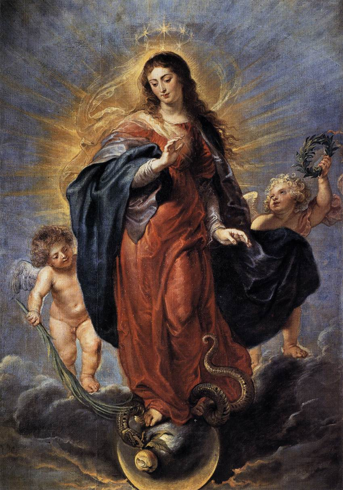
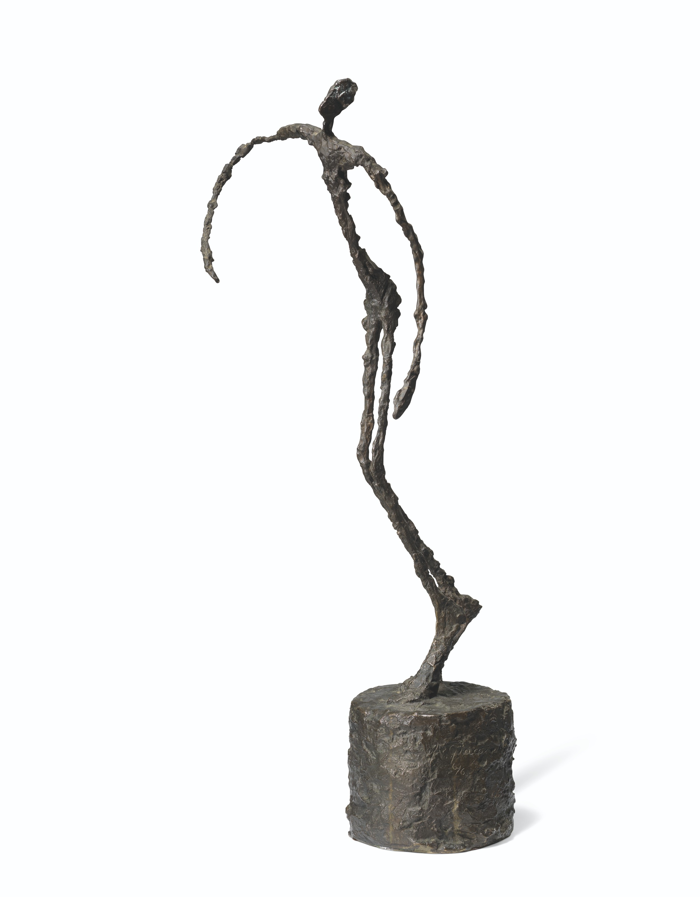
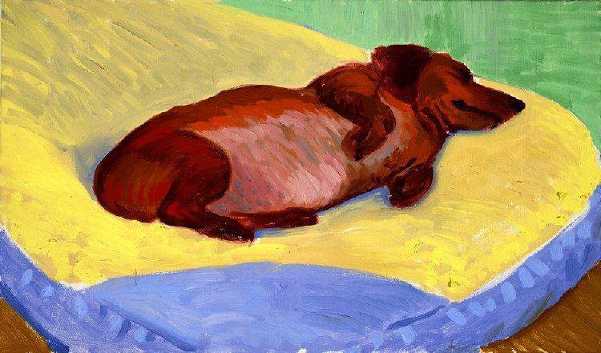

I know it’s bad to generalise the art of a whole continent. But I feel African sculpture is so good at expressing that there’s ‘another side to the coin’. Really, we are all in an absurd condition. Lol


Hokusai

This is just pure leisure - life is good and beautiful. Like the start of a holiday. 😂
Catholic art is so potent. Consistently impressive depictions of majesty and grace.
Giacometti makes me feel like I’m in some kind of Yves Tanguy abstract purgatory wasteland. But one that’s misty and industrial.
I grew up with a Dachshund. Hockney rightly portrays them as warm, ember-like, and soft. They almost melt into one another. And it’s all so intimate - his whole series ‘Dog Days’ really does capture what it's like to have them around.